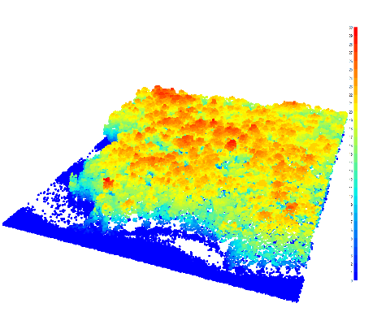
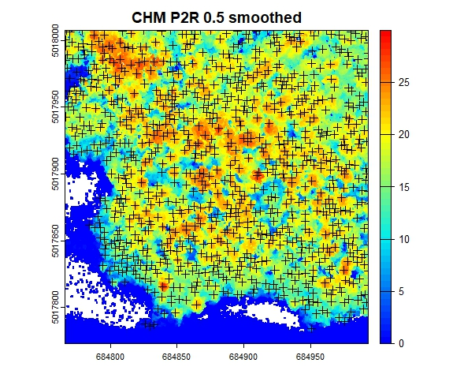
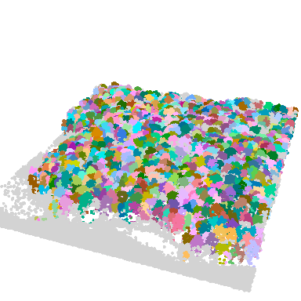
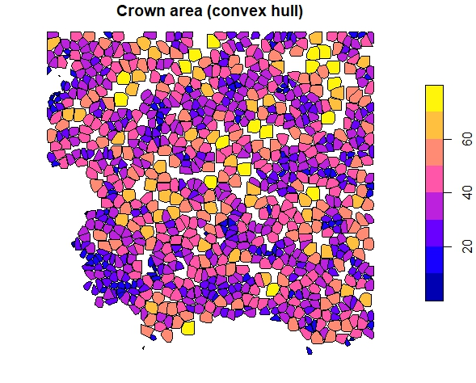
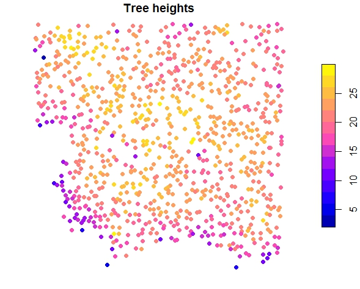
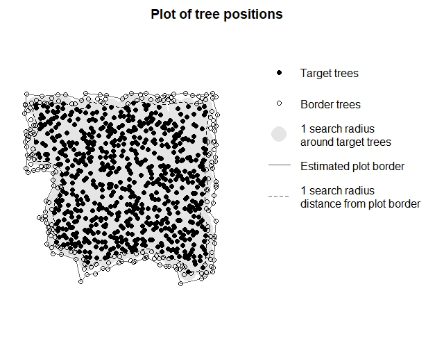
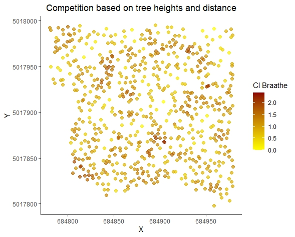

Workflow for deriving size-distance-dependent competition indizes from ALS data
Airborne Laser Scanning is a powerful tool for forest management and
research, offering accurate large-scale data. To quantify competition on
the individual tree level, first the ALS point cloud needs to be
pre-processed. For using the data in TreeCompR, we need to segment the
trees and derive an inventory table. The package lidR is
a great option to load,inspect and process your ALS data and to segment
individual trees. Check out the lidRbook for their very
nice detailed workflows and examples.
Read the point cloud
The lidR
package can read various data formats. Read in the raw ALS point cloud.
Here we show a workflow with the example data from the lidR package.
LASfile <- system.file("extdata", "Megaplot.laz", package="lidR")
las <- readLAS(LASfile)
#print a summary
print(las)Maybe just load xyz to save memory, in case you have a lot of
parameters stored in your data, by using the optional parameter
select within readLAS().
las <- readLAS("file.las", select = "xyz") # load XYZ onlyAnd it is always good to check and validate your data using the
las_check() function.
las_check(las)Plot your data
plot(las)
Please note, there are various options on individual tree segmentations (e.g. based on the point cloud or canopy height model). Be aware, that based on your own data, you might need to test the approaches and the results and check visually, if the results are realistic.
For a segmentation based on CHM, first the CHM needs to be generated:
# create CHM raster from point cloud with 0.5 m resolution (adjust values if needed)
chm_p2r_05 <- rasterize_canopy(las, 0.5, p2r(subcircle = 0.2), pkg = "terra")
# Post-processing median filter
kernel <- matrix(1,3,3)
chm_p2r_05_smoothed <- terra::focal(chm_p2r_05, w = kernel, fun = median, na.rm = TRUE)
#locate tree tops
ttops_chm_p2r_05_smoothed <- locate_trees(chm_p2r_05_smoothed, lmf(5))
col <- height.colors(50)
plot(chm_p2r_05_smoothed, main = "CHM P2R 0.5 smoothed", col = col);
plot(sf::st_geometry(ttops_chm_p2r_05_smoothed), add = T, pch =3)
Segment the trees
algo <- dalponte2016(chm_p2r_05_smoothed, ttops_chm_p2r_05_smoothed)
las <- segment_trees(las, algo) # segment point cloud
plot(las, bg = "white", size = 4, color = "treeID") # visualize trees
Get crown metrics
crowns <- crown_metrics(las, func = .stdtreemetrics, geom = "convex")
plot(crowns["convhull_area"], main = "Crown area (convex hull)")
trees <- crown_metrics(las, func = .stdtreemetrics, geom = "point")
plot(trees["Z"], main = "Tree heights", pch = 16)
Integration into TreeCompR
Extract a inventory table from the crown data:
library(sf)
library(dplyr)
inventory <- trees %>%
mutate(x = st_coordinates(.)[,1], y = st_coordinates(.)[,2]) %>%
st_set_geometry(NULL)
head(inventory)
#> treeID Z npoints convhull_area x y
#> 1: 15 18.53 51 19.995 684807.0 5018005
#> 2: 16 20.66 88 39.888 684838.7 5018006
#> 3: 17 17.82 73 27.695 684892.5 5018007
#> 4: 18 13.55 51 23.316 684909.6 5018006
#> 5: 19 22.00 69 34.506 684770.2 5018006
#> 6: 20 17.75 28 19.758 684980.1 5018005validate the inventory table with read_inv() and define
target trees (automatically) with define_targets() where
trees at the edge of the plot or dataset (1 search radius away from plot
edge) are automatically excluded for calculating CIs.
inv_trees <- read_inv(inventory, height = Z, height_unit = "m")
#> The following columns were used to create the inventory dataset:
#> id --- treeID
#> x --- x
#> y --- y
#> height --- Z
targets_buff <- define_target(inv_trees, target_source = "buff_edge", radius = 10)
plot_target(targets_buff)
Now you can calculate the tree competition (size-distance-dependent) for your trees. Afterwards you can print your results, save the dataframe or plot the results according to your needs.
CI <- compete_inv(inv_source = inv_trees, target_source = "buff_edge",
radius = 10, method = "all")
CI
#> ---------------------------------------------------------------------
#> 'compete_inv' class inventory with distance-based competition indices
#> Collection of data for 671 target and 220 edge trees.
#> Source of target trees: buffer around edge Search radius: 10
#> ---------------------------------------------------------------------
#> id x y height CI_Braathe CI_RK3 CI_RK4
#> 45 61 684895.13 5017995.17 17.44 0.621 3.564 5.29
#> 50 67 684812.86 5017994.96 24.26 0.494 2.633 4.222
#> 57 74 684806.23 5017990.75 25.68 1.179 7.868 10.898
#> ... ... ... ... ... ... ...
#> 871 900 684966.93 5017806.91 18.44 0.737 4.914 5.585
#> 874 903 684975.75 5017803.27 19 0.705 1.173 5.863
#> 881 910 684959.15 5017797.96 16.03 0.77 3.689 5.311plot the results
library(ggplot2)
ggplot(CI, aes(x = x, y = y, color = CI_Braathe)) +
geom_point(size = 2, alpha = 0.7) + # Adjust point size and transparency
scale_color_gradient(low = "yellow", high = "darkred",
name = "CI Braathe") + # Customizing color scale
theme_classic() + # Change the theme
labs(title = "Competition based on tree heights and distance",
x = "X", y = "Y") + # Add title and axis labels
theme(
plot.title = element_text(hjust = 0.5), # Center the plot title
legend.position = "right" # Position of the legend
)
Other options to pre-process the ALS point clouds
There are other packages available, e.g. the itcSegment
package. Within their function itcLiDARallo(), trees are
being segmented based on typical allometric relations that can be
defined beforehand. We also used this approach with the settings below
to pre-process the MLS data in our manuscript “TreeCompR: Tree
competition indices for inventory data and 3D point clouds”. We used
publicly available laser scanning datasets from the Bavarian
Agency for Digitisation, High-Speed Internet and Surveying.
library(itcSegment)
# create a lookup table with common height-crown diameter-relations
# (example from itcSegment, also used in our case study)
lut <- data.frame(
H = c(2, 10, 15, 20, 25, 30),
CD = c(0.5, 1, 2, 3, 4, 5))
#create a digital terrain model
dtm <- grid_terrain(las = las, res = 0.5, algorithm = knnidw(k=10L, p=2))
plot(dtm)
#normalize the height of the las data by terrain
nlas <- las - dtm
# segment the trees (adjust epsg according to your coordinate reference system)
se<-itcLiDARallo(nlas$X,nlas$Y,nlas$Z,epsg=32632,lut=lut)
summary(se)
plot(se,axes=T)
#validate the output in TreeCompR
inv_trees <- read_inv(se, height = Height_m, height_unit = "m")
#quantify tree competition (adjust radius)
compete_inv(inv_source = inv_trees, target_source = "buff_edge",
radius = 13.5, method = "all")